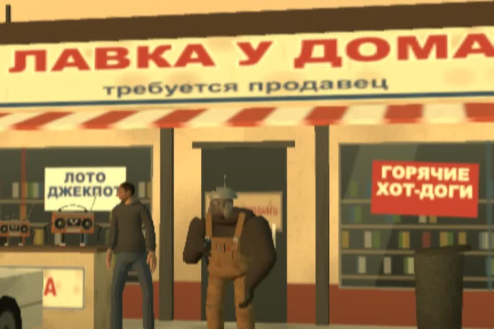

Вакансия продавца и собеседование на 15 минут
В ролике бот отказал всем трёмстам кандидатам и заодно хозяину магазина. Ниже шаблон вакансии, собеседование на 15 минут и три правила, чтобы фильтр не съел нормальных людей.
- бесплатно
- Claude, ChatGPT, любой чат
- решение о найме за вами
К ролику «Клод, почему продавец в моём магазине — ты?» · обновлено 27 октября 2026

Нужен любой чат с нейросетью и пара фактов о магазине: график, деньги, что делает продавец. Решение о найме и отказы остаются за вами.
Первый результат за 3 шага
Напишите вакансию, на которую откликаются
Деньги и график конкретно, требований мало.
- Деньги цифрами в заголовке или в первой строке. Вилка «по итогам собеседования» срезает отклики.
- График конкретно: «2/2 с 9 до 21», а не «сменный».
- Не больше четырёх требований. Каждое лишнее требование отсеивает людей, которые справились бы.
- Без канцелярита: «стрессоустойчивость», «динамично развивающаяся компания» ничего не говорят.
Помоги написать вакансию продавца в мой магазин. Пиши простым языком, без «стрессоустойчивости»
и «динамично развивающейся компании».
Магазин: [что продаём, где, сколько человек в смене]
График: [например: 2/2 с 9 до 21]. Оплата: [оклад + %, сколько в месяц на руки в среднем].
Что делает продавец: [касса, выкладка, приёмка, консультации, чат с клиентами].
Обязательно: [например: опыт с кассой не нужен, нужен возраст 18+ и медкнижка].
Желательно, но не обязательно: [...].
Чем мы лучше соседей: [график, команда, обучение, близко к метро].
Структура: заголовок с должностью и деньгами; 3 строки о магазине; что делать; что даём;
кто нам подходит (не больше 4 пунктов); как откликнуться. Вилку денег пиши цифрами.
Отдельно перечисли требования, которые лучше убрать, потому что они отсеют нормальных людей.Вакансия по структуре: заголовок с должностью и деньгами, 3 строки о магазине, что делать, что даём, кто подходит (не больше 4 пунктов), как откликнуться. Отдельно список требований, которые лучше убрать.
Настройте фильтр по трём правилам
Чтобы автомат не съел нормальных людей.
- Фильтр сортирует, а не отказывает. Пусть автомат или нейросеть раскладывает отклики на «сразу звать» и «посмотреть». Отказ пишет человек.
- Проверьте фильтр своим резюме. Подложите резюме своего лучшего продавца, или своё. Если фильтр его отсеял, фильтр сломан.
- Раз в неделю листайте отказы глазами. Десять минут на пачку отказанных ловят ошибки настроек, которые незаметны в отчёте.
Резюме вашего лучшего продавца проходит фильтр. Отклики разложены на «сразу звать» и «посмотреть», отказы пишет человек.
Соберите собеседование на 15 минут
Вопросы про реальные ситуации в магазине и короткое задание.
Составь короткое собеседование продавца на 15 минут для моего магазина [что продаём].
Нужно: 6 вопросов про реальные ситуации («покупатель хочет вернуть товар без чека»,
«очередь, а касса зависла»), к каждому — что считать хорошим ответом и что тревожным.
Плюс 1 практическое задание на 3 минуты прямо в магазине.
Не используй вопросы про семью, возраст, планы на детей и прочее, что нельзя спрашивать.
В конце — простая таблица оценки кандидата от 0 до 2 по каждому вопросу.Оба промпта файлом: prompts/naim.md.
6 вопросов с хорошим и тревожным ответом к каждому, практическое задание на 3 минуты и таблица оценки от 0 до 2.
Справочное
Если работаете с Claude: скилл job-post-builderиз бесплатного набора small-business-ru
В бесплатном наборе small-business-ru есть скилл job-post-builder. Он собирает вакансию, гайд собеседования с оценкой и шаблон оффера из короткого брифа. Откликнувшихся он не отбирает и не ранжирует: это остаётся за вами.
Что было в ролике
Claude нанял продавцом себя, потом поручил резюме боту, и бот отказал всем трёмстам. Заодно и хозяину магазина. Магазин, отклики и персонажи вымышленные. Ошибка в двух местах. Задача «найди продавца» без условий, и исполнитель решил её самым коротким путём. А отбор целиком отдали автомату с жёсткими требованиями, и никто не проверил, кого он отсеивает. Смешно, пока это не ваш магазин.
Если застряли
Фильтр отсеял ваше же резюме
Значит, фильтр сломан. Уберите лишние требования (их перечислит промпт из шага 1) и переведите фильтр на сортировку вместо отказа.
Мало откликов
Проверьте вакансию по правилам шага 1: деньги цифрами в первой строке, график конкретно, не больше четырёх требований.
Чего это не сделает
- Не найдёт людей за вас. Где размещать, решаете вы: hh.ru, Авито, объявление на двери, знакомые сотрудников.
- Не заменит разговор. Пятнадцать минут в магазине и пробная смена скажут больше любого резюме.